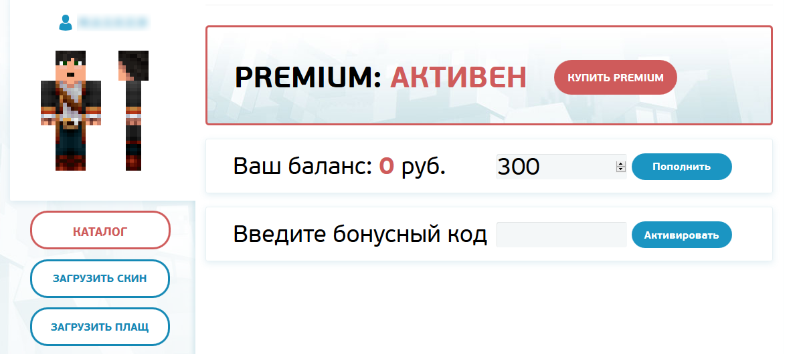
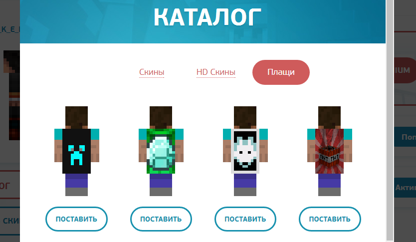
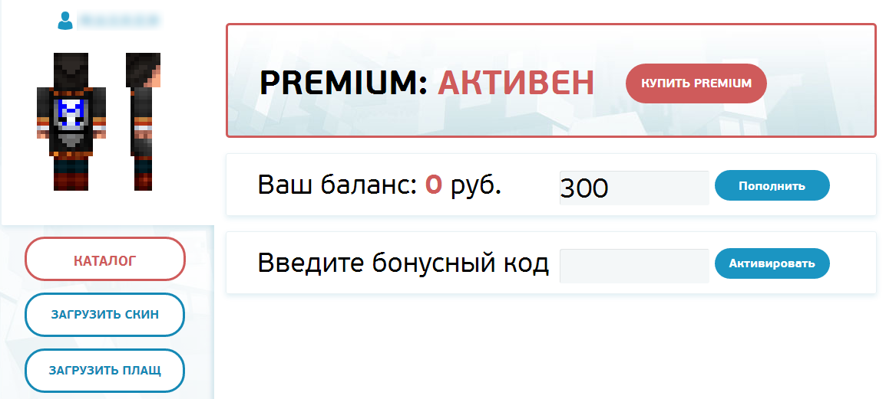
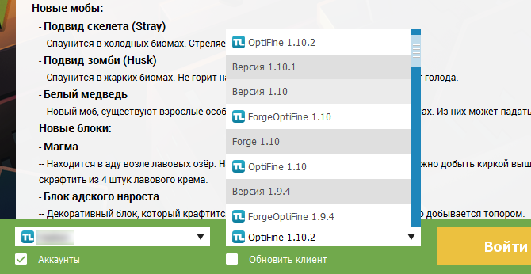
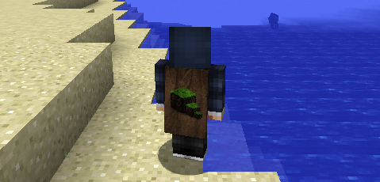

Установка скинов в Майнкрафт используя TLauncher
Как стать крайне популярным и заметным на сервере? Если скин например уже стоит.. Самый отличный вариант, это установить в свой Майнкрафт плащ! Мы сомневаемся, что на сервере много людей с ним, вы наверное вообще их не видели! Ведь даже с лицензии его не поставить! Но только для вас, мы подготовили способ установки, который доступен каждому, конечно же, его будут видеть все на сервере!!!
Если до сих пор не установили собственный скин, читайте соответствующий гайд по установке скинов у нас на сайте.
Нужно понимать, что плащи это такая фишка, которая должна оставаться желанной и актуальной всегда, поэтому чтобы его поставить, вам нужен TLauncher Premium! Почитать можно про него на официальном сайте. Помимо плаща, этот премиум даёт очень много других плюшек, которые могут облегчить жизнь и выделить вас на сервере: отключение любой рекламы и установка HD скинов. Цена вполне адекватна за такие функции, учитывая что все игроки видят плащи и HD скины.
Если же вы его подключили (Понятно, нужно пройти регистрацию на tlauncher.org и приобрести премиум), приступайте к его установке.

В профиле ищем кнопку "Загрузить плащ" и указываем с компьютера файл плаща. Размер его должен быть 64x32, но можно и больше - то есть, можно и HD плащ установить в TLauncher! В каталоге можете найти готовые, если не хотите искать сами.

Как только загрузите или укажите из каталога, в профиле ваш персонаж получит плащ и вы сможете увидеть как он смотрится.

Теперь через TLauncher (Если нету, то скачиваем с официального сайта) авторизовываемся под своим аккаунтом, если не сделали это раньше, и запускаем версию с иконкой TL.

Плащ уже должен быть на вашем персонаже! Поздравляем!

Как произвести доплату Доната?
Для доплаты доната нужно сделать 3 простых пункта.
- Ввести свой логин
- Выбрать желаемый статус
- Нажать кнопку "Купить"
На следующей странице произойдет перерасчет стоимости доната.
Контакты
Контакты для важной связи
- Email: info@imidge.one
- ВКонтакте: vk.com/mine_blaze
- Скайп: vpnguard
Общие правила проекта MineBlaze (далее проект)
1.1 Регистрируясь на сервере, вы соглашаетесь со всеми правилами предоставленными в этом списке, правами описанными ниже и обязанностями;
1.2 Незнание правил не освобождает от ответственности;
1.3 При вводе на сайте не верного ника администрация не отвечает за последствия покупки доната на этот ник;
1.4 Передача/продажа аккаунтов сторонним лицам строго запрещена;
1.5 Администрация оставляет за собой право в одностороннем порядке изменять текущие правила без уведомления пользователей посредством группы VK;
1.6 Администрация ведет управление игровыми процессами и всем проектом - исключительно по своему усмотрению;
1.7 Так как не всегда удается определить нарушение правил пользователем, окончательное решение остается за Администраторами проекта;
Права и обязанности игроков
2.1 Игрок полностью отвечает за надежность своего пароля и доступа к аккаунту;
2.2 Игрок соглашается с тем, что потраченные им средства не будут возвращены;
2.3 Игроки, имеющие различные привилегии на сервере, ничем не отличаются от обычных игроков, кроме привилегий и полностью подчиняются правилам проекта;
2.4 В случае отсутствия игрока более 3х календарных месяца, все его данные, включая постройки на сервере, личный аккаунт и др. могут быть удалены, без оповещения его об этом; (Если у вас есть донат у вас ничего не пропадет)
Права и обязанности главной администрации проекта (далее администрация)
3.1 Главная администрация проекта является самым высоким по званию лицом, которое может не соблюдать данные правила и действовать на свое усмотрение;
3.2 Администрация не несет ответственности за аккаунты игроков, включая социальную инженерию, вирусы, подбор пароля и т.п.;
3.3 Все полученные администрацией средства, являются добровольным пожертвованием и не подлежат возврату;
3.4 Администрация вправе выдавать любое наказание;
3.5 Толкование правил сайта осуществляется только главными Администраторами. Любые другие попытки истолковать правила в пользу любой из сторон признаются некорректными;
3.6 Жалобы на администрацию не принимаются;
3.7 Администрация вправе забирать привилегии \ отказывать в обслуживании игрокам без объяснения причины;
3.8 Администрация имеет право не объяснять причины блокировки аккаунтов.
3.9 Администратор вправе изъять у пользователя любое имущество, если пользователь не сможет доказать его честное (без использования запрещенных дополнительных программных средств – читов и т.д.) происхождение;
Запреты и наказания
4.1 Использование нецензурной лексики в любом ее виде (Наказание: Мут на 15 мин.)
4.2 Гриферство (Наказание: Бан до 5 часов)
4.3 Подстрекать других игроков на нарушение правил (Наказание: Мут на 1 час)
4.4 Неприличные постройки или постройки, которые портят архитектуру игровой карты, такие как: столбы/лестницы в небо, коробки, оскорбительные постройки, застройка чужих построек и т.д. (Наказание: Снос постройки + бан на 1 час)
4.5 Зазывать на ловушки (Наказание: Бан на 30 мин. + удаление ловушки)
4.6 Флуд, мат, оскорбление, транслит, капс, попрошайничество в чате (Наказание: Мут на 10 мин.)
4.7 Продавать аккаунты (Наказание: Перманентный бан)
4.8 Препятствие нормальной игре (Наказание: Бан на 1 час)
4.9 Необоснованное наказание игроков (Наказание: Бан / Снятие доната)
4.10 Оскорблять проект и его администрацию (Наказание: Перманентный бан / Бан по IP)
4.15 Использование возможностей доната в корыстных целях(в пвп, полете и т.п.). (Наказание: Перманентный бан / Снятие доната)
4.16 Реклама других проектов в любом виде (Наказание: Перманентный бан / Бан по IP)
4.18 Сделки, связанные с продажей игровых ценностей за реальные деньги. Наказание: (Перманентный бан / Бан по IP)
Возможности доната
Вип:
- Возможность получить набор /kit vip
- Возможность отключения тел-ции /tptoggle
- Возможность проверить пинг /ping
- Возможность очистить инвентарь /ci
- Возможность эндер сундук /echest
- Возможность одеть блок на голову /hat
- Возможность вернуться назад /back
- Возможность игнорировать игрока /ignore
- Возможность заходить на полный сервер
Премиум:
- Возможность получить набор /kit prem
- Возможность включить полёт /fly
- Возможность починить вещи /fix all
- Возможность включить бессмертие /god
- Возможность открыть верстак /wbench
- Возможность посмотреть крафт /recipe
- Возможность восстановить голод /feed
- Возможность встать в афк режим /afk
- Возможность установить 4 дома /sethome
Креатив:
- Возможность выдать джетпак /feather
- Возможность стрельнуть /kittycannon
- Возможность узнать айди /durability
- Возможность включить креатив /gm 1
- Возможность включить приключ. /gm 2
- Возможность выключить креатив /gm 0
- Возможность много точек дома /sethome
- Возможность посмотреть игроков /near
- Возможность персональное время /ptime
Легенда:
- Возможность использовать админ чат /ac
- Возможность включить невидимку /vanish
- Возможность телепорт к другим /tp
- Возможность телепорт к себе /tphere
- Возможность дюпнуть предмет /more
- Возможность инфо о сервере /gc
- Возможность сменить погоду /weather
- Возможность изменить время мира /time
- Возможность телепортировать блок /jump
- Возможность игнорировать игрока /ignore
- Возможность несколько точек дома /sethome
Модер:
- Возможность телепорт наверх /etop
- Возможность телепорт координат /tppos
- Возможность выдать опыт игроку /exp
- Возможность вылечить игрока /heal
- Возможность проверить баланс /balance
- Возможность показать топ богачей /baltop
- Возможность создатель варп /setwarp
- Возможность запустить огненный шар /fireball
- Возможность несколько точек дома /sethome
Админ:
- Возможность поджечь игрока /burn
- Возможность узнать координаты /getpos
- Возможность поставить солнце /sun
- Возможность поставить дождь /rain
- Возможность включить день /day
- Возможность включить ночь /night
Гл.Админ:
- Возможность редактировать книгу /book
- Возможность добавить эффект /potion
- Возможность смена погоды /pweather
- Возможность узнать координаты /getpos
- Возможность изменить погоду /weather
- Возможность ударить молнией /shock
- Возможность сделать мини-объяление /me
Энигма:
- Возможность выдать предупреждение /warn
- Возможность убрать предупреждение /unwarn
- Возможность отправить запрос тп /tpahere
- Возможность последних заходов /seen
- Возможность узнать реальное имя /realname
- Возможность разбанить игрока /unban
- Возможность поджечь игрока /burn
Император:
- Доступ к чужим приватам и сундукам
- Возможность использовать сет //set
- Возможность забанить игрока /ban
- Возможность телепорт к себе /tphere
- Возможность бесконечных блоков /unlimited
- Возможность дать мут игроку /mute
- Возможность кикнуть игрока /kick
- Возможность снять мут /unmute
- Возможность снять бан /unban
- Возможность дать fly игроку /fly
- Возможность зачаровать /enchant
- Возможность поджечь игрока /burn
Делюкс:
- Доступ к приватам(увеличен х2)
- Возможность сетать //set (увеличен х2)
- Вечный иммунитет от бана/кика/мута и т.д.
- Возможность превратить в блоки /compact
- Возможность писать объявление /bc
- Возможность забанить игрока /ban
- Возможность дать мут игроку /mute
- Возможность кикнуть игрока /kick
- Возможность снять мут /unmute
- Возможность снять бан /unban
- Возможность изменить ник /nick
- Возможность сделать динамит /tnt
Помощник:
- Доступ к приватам(увеличен х3)
- Полный доступ к флагам /rg flag
- Возможность дать денег /eco give
- Возможность сетать //set(увеличен х3)
- Возможность телепорт к себе /tphere
- Возможность включить нано-броню /guard
- Возможность выдать себе предмет /i
- Возможность выдать игроку предмет /give
- Возможность узнать азимут /compass
- Возможность узнать высоту моря /depth
- Возможность узнать инфо региона /rg info
Опка:
- 75% команд сервера
- Доступ к приватам(увеличен х5)
- У вас иммунитет от бана (невозможно забанить)
- Возможность сетать //set(увеличен х5)
- Возможность телепорт игрока на спавн /spawn
- Возможность следить за сообщениями /socialspy
- Возможность телепорт к игроку с tptoggle /tpo
- Возможность дать fly другу /fly
Хелпер:
- 85% команд сервера
- Выдаются почти все команды сервера
- Возможность мини-консоли /console
- Возможность дать фейк-оп /fakeop
- Возможность сделать стены //walls
- Возможность сетать //set(увеличен х10)
- Возможность убрать воду //drain
- Возможность забанить по IP /ipban
- Возможность забанить навсегда /ban
- Возможность замутить навсегда /mute
- Возможность делать пирамиду //pyramid
- Возможность делать любой ник /nick
Блейз:
- 99% команд сервера
- Вам доступны все команды сервера
- С Вас сняты все задержки на команды
- Вы получаете звездочку в pex
- Вы получаете полную опку(без лимита)
- Полный доступ к приватам(без лимита)
Кейсы:
- В них выпадают все вышеперечисленные донат привилегии
Разбан:
- Разбанивает в лобби и только в нем!